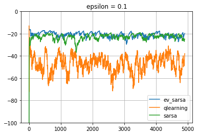

Q learning - One of the sucessful techniques in Reinforcement Learning .It was initially introduced in 1989 by Watkins. Q learning came to light whenDeepmind used it to play Atari games with superhuman perfomance in 2015.
In General,Q learning is a model free learning .Its an off policy TD Control.
In this post , We will see a bit about Q learning and where its stands generally in the RL setup.
Simply , In reinforcement Learning, the Agent acts on the Enviornment with Action and collects the Reward. The Enviornment transitions from an older state to a new state in reponse to the action by the Agent.
Policy: defines the learning agents way of behaving at a given time.A policy is a Mapping from States to probability of selecting different actions.Its denoted by $\pi$.
| If the agent is following policy $\pi$ at time t , then $\pi(a | s)$ is the probability that action $A_{t}$ = a if state,$S_{t}$ =s.’ | ’ in the middle stands for conditional probability. |
Reward is the goal of the RL Problem. The objective of the agent is to maximize the total rewards over time.
The State Value for a state $s$ under policy $\pi$ denoted as $v_{\pi}(s)$ ,is defined as the Expected return when starting in $s$ and following $\pi$ thereafter.
The value of the state is the total amount of reward which the agent can accumulate over time. There will be a state value for each state.
| State | Value |
|---|---|
| State1 | $v(s1)$ |
| State2 | $v(s2)$ |
| State3 | $v(s3)$ |
| State4 | $v(s4)$ |
Action value is denoted as $Q(s,a)$ is the expected return starting from state s, taking an action a and then following policy $\pi$.
We have qvalues for each state for all the possible actions .
Lets say , we have four states and 3 possibe actions for each state,then it can be shown in the tabular form
| State/Actions | Action1 | Action2 | Action3 |
|---|---|---|---|
| State1 | $Q(s1,a1)$ | $Q(s1,a2)$ | $Q(s1,a3)$ |
| State2 | $Q(s2,a1)$ | $Q(s2,a2)$ | $Q(s2,a3)$ |
| State3 | $Q(s3,a1)$ | $Q(s3,a2)$ | $Q(s3,a3)$ |
| State4 | $Q(s4,a1)$ | $Q(s4,a2)$ | $Q(s4,a3)$ |
As shown in the table above There is a action value $Q$ for all the actions in a state unlike the Value function $V$ that has a value just each state.when the model is not available, the Q values helps to choose the next best action from that state.
Model Free means that we do not learn the model of the enviornment. We do not learn complete map of the domain. We do not learn the Probability Transition from one state to another state. $P(S^{‘}| S,a)$.
Although we need a model , we need the model to generate only sample transitions, not the complete probability distributions of all possible transitions.
At the end of the learning in model free methods, we won’t have transition probabilities of the enviornment neither we know the rewards we will get without taking that action. However a policy alone is learnt based on the model(eg.Policy Gradient , Q learning)
In case of Q - Learning ,It estimates the optimal Q values for each action in the state . We pick an action for that state that has the highest Q value and defined as the policy
In On-Policy methods - the Policy that is being learnt and the policy that is used to explore and take actions and move to next state are the same.
In off policy methods, two different policies are used
Q learning is an off policy TD control as the policy we use to estimate q values and the policy that is used to take actions are different
Lets see a bit about Temporal Difference (TD) before diving to Q-learning.
TD stands for Temporal difference Learning.
TD is a hybrid of both the Montecarlo and Dynamic programming.
It involves
The simplest TD method makes the update:
Here $V({S_t})$ is the estimated value and $V({S_{t+1}})$ is the successor state , ${R_{t+1}}$ is the reward collected and the computed backedup value is ${R_{t+1}} + \gamma V({S_{t+1}})$
The Error between the estimated value of $S_{t}$ and the better estimate ${R_{t+1}} + \gamma V({S_{t+1}}) - V({S_t})$ is called TD error $\delta$.
More Genericially , TD Update can be written as
With a model , state values alone is sufficient. We will have the state value for each state .From a state we can transition to the new state, that gives high value Returns
When the model is not available we will be using Action values. (because to calculate state value, we need probability transions)
The TD(0) update for action values is :
Q learning is an off policy TD Control.
The equation for Q learning is $$
Q({S_t},{A_t}) \leftarrow Q({S_t},{A_t}) + \alpha \left[{R_{t+1}} + \gamma \underset{a}{max} Q({S_{t+1}},a) - Q({S_t},{A_t})\right]
In Q learning ,we force the target policy $Q(S,A)$ to move towards the optimal $q^{*}$ by acting greedily ($\underset{a}{max} Q({S_{t+1}},a)$) in that state . We dont follow that greedy action .The update is made assuming we follow the greedy behaviour.-Similiar to asking the question.. What is the estimate of $Q({S_t},{A_t})$ if we take a greedy action at this state ${S_{t+1}}$.We collect rewards $R_{t+1}$ for the initial action ${A_{t}}$ and compute the backedup action values for $Q({S_{t+1}},a)$, and use it to estimate the values at $Q({S_t})$ Since both the policies are different , Q learning is Off policy #### The Q learning Algorithm ![QlearningAlgorithm][QlearningAlgorithm] It should be clear from above that , for each estimate of Q at state $S_{t}$ , Q learning uses the maximum action value of the the state $S_{t+1}$ (Highlighted in blue).However, the next action is always derived by a different policy such as $\epsilon$-greedy (Highlighted in Green) To be more clear , the item highlighted in blue is used to update an estimate of the Q values.But the maximum action value is not used for the next action.Its done in other way highlighted in Green ## Q Learning Vs SARSA: [SARSA](http://citeseerx.ist.psu.edu/viewdoc/download?doi=10.1.1.17.2539&rep=rep1&type=pdf) is defined as on-policy TD Control to find optimal policy. It stands for the transition given by State,Action,Reward,(next)State,(next)Action - SARSA The update equation is given asQ({S_t},{A_t}) \leftarrow Q({S_t},{A_t}) + \alpha \left[{R_{t+1}} + \gamma Q({S_{t+1}},{A_{t+1}}) - Q({S_t},{A_t})\right]
$$
We use the backed up action values at next state $Q({S_{t+1}},{A_{t+1}})$ to re-estimate the values at state $Q({S_t},{A_t})$
In SARSA the updates are made assuming we follow the actions defined by the policy - We dont have a seperate greedy policy for the updates. as in Q learning. The policy used to make the update and the one used to pick next action is the same.Thus SARSA is online.
From the state ${S_t}$,the agent chooses ${A_t}$ , collects a reward ${R_{t+1}}$ , and goes to the next state ${S_{t+1}}$. The agent chooses the next action ${A_{t+1}}$ based on its policy .We Collect the backed up action values at $Q({S_{t+1}},{A_{t+1}})$ and use it to estimate action values of the former state action $Q({S_t},{A_t})$ by calculating the TD error - the difference between expected value- the current action value which in turn moves towards a better policy.

It should be clear now that , in the line highlighted with Blue, the Agent chooses an action A’ from next state state S’ state using the greedy policy to update the current state S. In the final line $A\leftarrow A^{‘}$ , the same action A’ selected previously (by $\epsilon$-greedy policy) for the update is used by the Agent to move to the next state .
Here we shall find a case study with Cliff Walker Enviornment . Here is the jupyter notebook comparision of Q learning and SARSA for the cliff walker enviornment.
` This is a simple implementation of the Gridworld Cliff reinforcement learning task.
Adapted from Example 6.6 (page 132) from Reinforcement Learning: An Introduction
by Sutton and Barto:
http://incompleteideas.net/book/RLbook2020.pdf
With inspiration from:
https://github.com/dennybritz/reinforcement-learning/blob/master/lib/envs/cliff_walking.py
The board is a 4x12 matrix, with (using Numpy matrix indexing):
[3, 0] as the start at bottom-left
[3, 11] as the goal at bottom-right
[3, 1..10] as the cliff at bottom-center
Each time step incurs -1 reward, and stepping into the cliff incurs -100 reward
and a reset to the start. An episode terminates when the agent reaches the goal.`
The enviornment is shown below
o o o o o o o o o o o o
o o o o o o o o o o o o
o o o o o o o o o o o o
S C C C C C C C C C C G
Here,
We will run both the Q learning and Sarsa on this enviornment to compare their performances.The jupyter notebook can be found here
We could see that Q learning learns the best policy after an inital transient (Insert Image)

The policy learnt by both the Q learning and SARSA can be compared.
Q-Learning Actions
> > > > > > > v v > v v
> > > > > > > > > > > v
> > > > > > > > > > > v
S C C C C C C C C C C G
Here we can see from the starting point S, the policy goes to the immediate right and reaches the Goal.
SARSA Actions
> > > > > > > > > > > v
^ ^ ^ > > > > > > > > v
^ ^ ^ ^ ^ ^ ^ ^ ^ ^ > v
S C C C C C C C C C C G
Here we can see , the agent goes to the top of the grid , takes a right and then reaches the Goal

SARSA takes the longer, safer path going to the top and then moving towards the Goal. However, Q learning takes the best action and takes the path near to the cliff, the optimal path (shortest) . sarsa is an onpolicy algorithm and it cannot afford to fall the cliff every time. So it takes a much safer path.